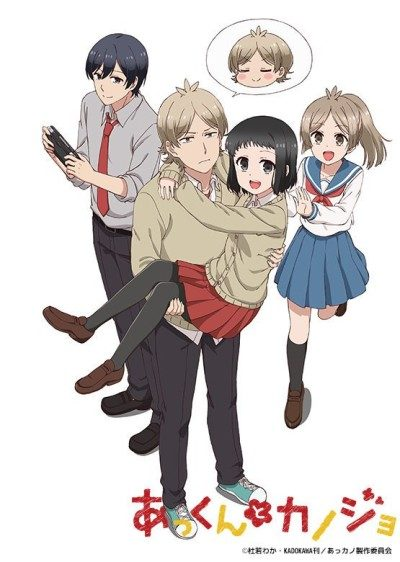

My Sweet Tyrant
あっくんとカノジョ
Akkun treats his girlfriend Non terribly, but he is secretly madly in love with her.
The anime covers the whole manga.
6.6AniList score
—Animeter, no votes yet
25episodes
Rate it or report where you stopped
Anime finished. Where does the manga pick up?
StatusFully adapted
The anime adapts the entire manga through its final chapter (58.5), so there is nothing left to continue with. Reading the manga still offers bonus material the anime omits.
15866 end
Season 1
More like My Sweet Tyrant
 Unclear6.5
Unclear6.5
 Manga Ch. 487.8
Manga Ch. 487.8
 Manga Ch. 177.2
Manga Ch. 177.2
 Manga Ch. 767.9
Manga Ch. 767.9
 Manga Ch. 337.8
Manga Ch. 337.8
 Done8.1
Done8.1
 Manga Ch. 357.7
Manga Ch. 357.7
 Manga Ch. 157.5
Manga Ch. 157.5
 Manga Vol. 47.5
Manga Vol. 47.5
 Manga Ch. 1528.3
Manga Ch. 1528.3
 Unclear7.7
Unclear7.7